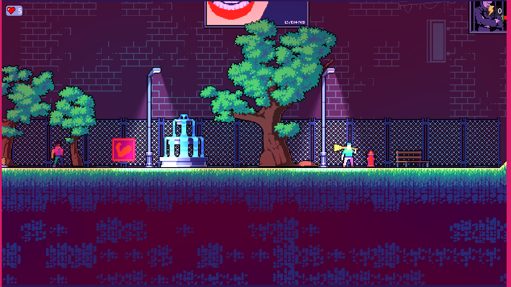
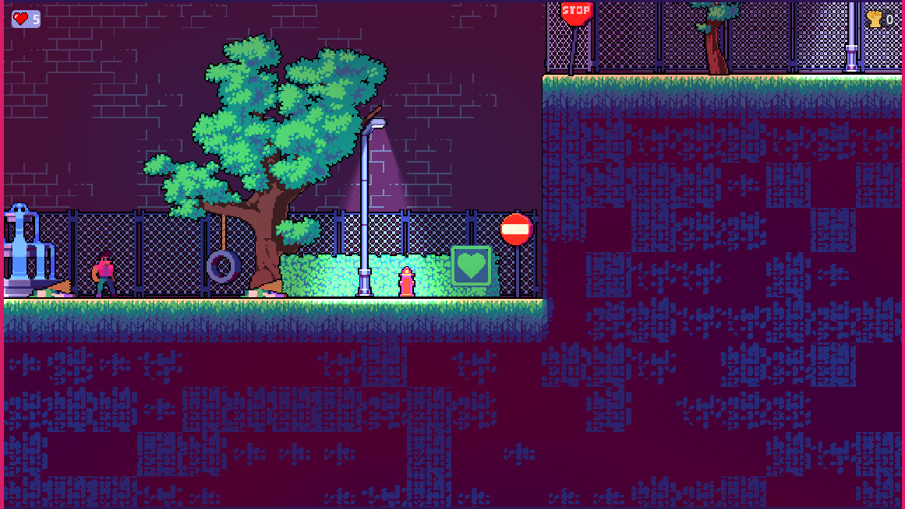
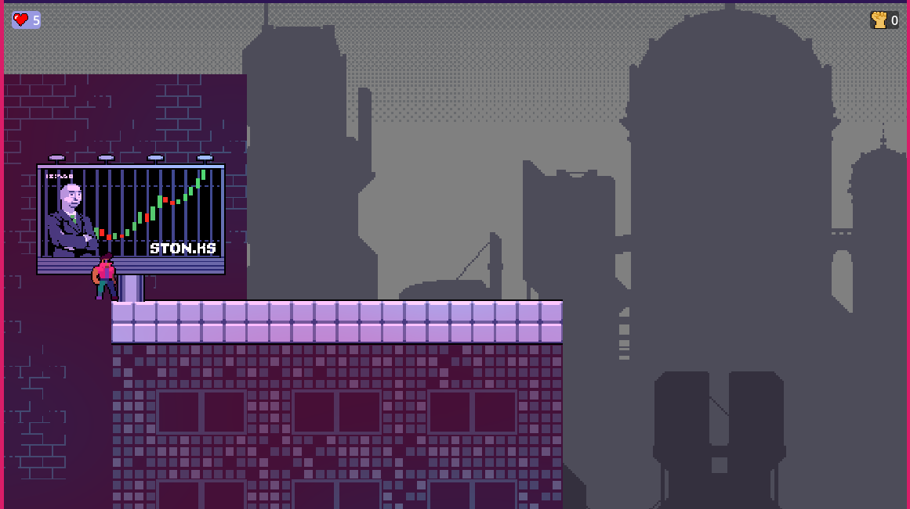
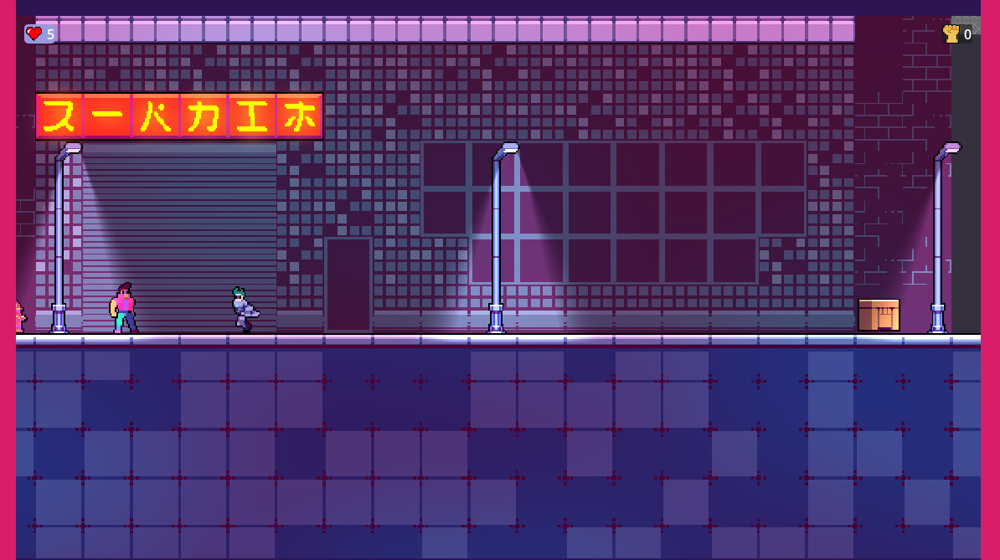

Gallery & Code Snippets




Project Description
Project Overview Developed in 72 hours for Mini Jam 167, this project was built around the theme "Cyber"
and the limitation "One button, two actions."
Concept & Mechanics The core concept was a humorous take on the limitation: since the player has limited
input, every interaction is resolved through brute force. Whether hacking a terminal, opening a door, or
climbing a ladder, the protagonist solves every problem by punching it.
Scope & Learning Originally planned as a 3-level puzzle-platformer, the scope was reduced during the jam to
focus on a polished, functional prototype. While some puzzle elements were cut, this project stands as a
significant milestone: it was our first completed team project. It provided invaluable lessons in rapid
prototyping, scope management, and the importance of clean code architecture for future games.
My Role & Contributions
I started as a Programmer, working on the initial codebase alongside my two teammates. I then shifted my focus to Level Design and Tilemapping, dedicating a significant amount of the jam to integrating the 2D assets and building the environments
Challenges & Learnings
The biggest challenge was the sheer novelty of it all. It was my very first game
jam, my first time using Godot, and the first time I had ever completed a game. Stepping into the world of
game development in such a short timeframe was an intense and eye-opening experience.
The second major hurdle was sleep management. It took me several days to recover from the
jam. I had never coded on so little sleep before, and the pace was incredibly intense. It was a physical
challenge as much as a mental one.